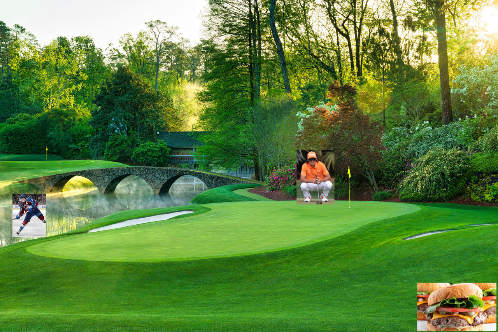
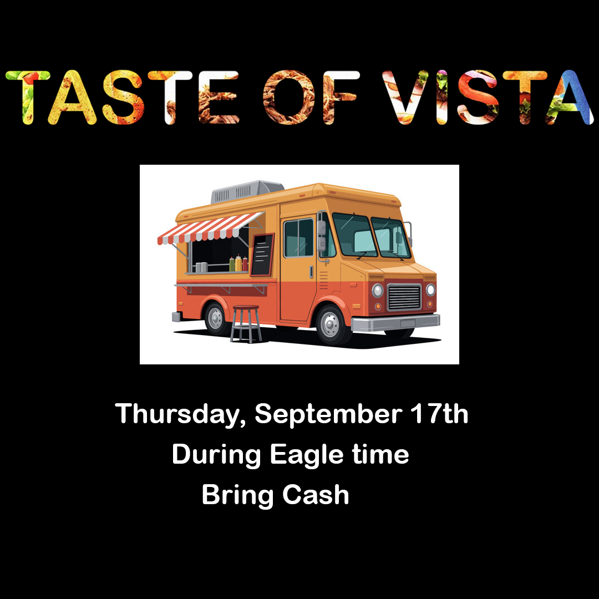
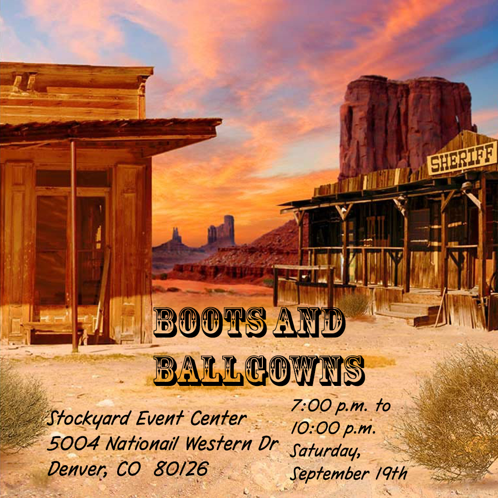

Photoshop Showcase

Clipping Mask Project
Why I chose this image: I chose this image because it shows one of the sports that I like to play and enjoy. I also like to watch golf in my freetime. The image I chose is Rory Mcilroy playing out of a bunker at the famous and well known golf tournamnet the Masters at Augusta.
Photoshop skills used: The Photoshop skills I used to create this image is image layering and creating a clipping mask. These were some of the new skills I learned in Photoshop in the Multi Media Class.

Image Combining Project
Why I chose this image: I chose each of these pictures for a certain reason that represent who I am. The burger picture represents how I love to eat burgers all the time. I chose the picture of Rickie Fowler becaus ehe is my favorite golfer and went to college at Oklahoma State University which is where my brother goes to college. The third image I chose because I also love to play Hockey in the wnter and I watch the Colorado Avalanche a lot. Cale Makart is my favorite player on the avs which the image shown represents.
Photoshop skills used: The photoshop skills I used to create this image I saved 4 images which make up the picture. I then used the Masters photo and placed than as the backround. I then cropped all the images to fit the backround in the necessary spot. I then inserted all the images to the backround to create the photo.

Image & Text Design
Why I chose this image: I chose this image because I enjoy to watch golf and Rickie Fowler is one of my favorite golfers to watch on the PGA Tour. This was his winning put in a 3 man playoff at the 2023 Rocket Mortgage Classic in Detroit, Michigan. This was his last and most recent win in his career.
Photoshop skills used: The photoshop skills I used for this image are text, croppping and making the text curved. This required time to find the certain text I wanted to make the photo the way I wanted to show it.

Taste Graphic Project
Why I chose this image: I chose this image because I enjoy food. During homeocming week, Mountain Vista High School has a series of events during the week to make the week fun and enjoyable. Since I love to eat food this was one of my favorite events of the week. That I enjoyed a lot.
Photoshop skills used: The photoshop skills I used were cropping the image and using quick select. I then used the text tool to add the text to make the image the way that I want to show the event.

Homecoming Design
Why I chose this image: I chose this image because the theme for Homecoming this year at MVHS was country roads take me home. So I chose a old western style backround. Which made a great photo at the end with a great backround to represent the theme.
Photoshop skills used: I used the text and cropping tools in photoshop. I had to find the right font to represent a western theme throught the image.